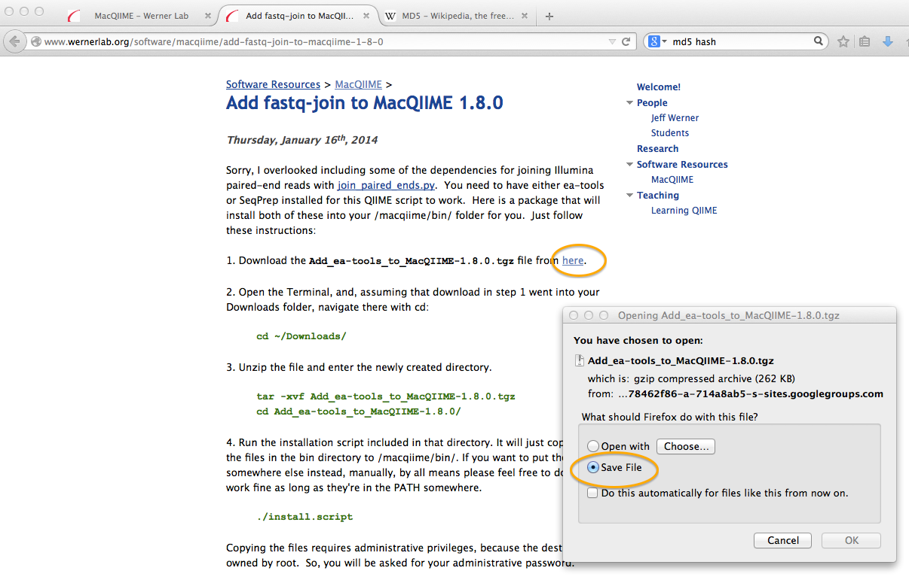

layout: page title: "MacOS Users: Installing MacQIIME"
These directions are slightly modified from those provided by the Werner lab.
Please note: * You must have administrator access on a computer to install MacQIIME. * You must install R and the required dependency packages. We recommend that you install R before installing MacQIIME.
Open your computer's terminal. Applications -> Utilities -> Terminal
Navigate to the Downloads directory (where the archive was saved), using the cd (change directory) command:
cd ~/Downloads
To do this, you would type:
md5 MacQIIME_1.8.0-20140103_OS10.6.tgz
The computer should return the following:
MD5 (MacQIIME_1.8.0-20140103_OS10.6.tgz) = 9f1175e0a0ba71ebe6bb5d9b7bb0e6c2
Check carefully that the number above matches exactly your output. If it does not, discard the downloaded file (move to trash, empty trash), and start over with an uncorrupted or complete download.
tar -xvf MacQIIME_1.8.0-20140103_OS10.6.tgz
This will show a list of file contents as they are extracted from the archive:
Unarchiving the file will automatically create a new directory called “MacQIIME_1.8.0-20140103_OS10.6”. Use cd to move into that directory:
cd MacQIIME_1.8.0-20140103_OS10.6/
Use the “ls” command (list) to view the files in that directory:ls
The computer will return the following:
README.txt install.s macqiime scripts
./install.s
The script will run the installation of MacQIIME and will prompt you to agree to write-over the old directory.
As we are starting from scratch this is okay, and you may hit enter. In the future, if you upgrade to a new QIIME version, it is recommend that you save the older version before upgrading. There are directions for saving the old version of MacQIIME.
You will be prompted for a password. This is where administrator access (sudo) is needed:
After you type in your password, and the script will do its thing!
At the end, the terminal look like:
This MacQIIME add-on is for joining paired-end Illumina reads.
Save the archive (do not open with Archive Utility). The archive (“Add_ea-tools_to_MacQIIME-1.8.0.tgz”) should automatically be saved in the Downloads directory.

As before, unarchive:
tar -xvf Add_ea-tools_to_MacQIIME-1.8.0.tgz

cd Add_ea-tools_to_MacQIIME-1.8.0/
./install.script
You will again be prompted for the administrative password. There is no special message that is returned when the installation is complete, but you will know by the “$” at the end of your userid, which means that the computer is ready for your next command.
ftp://ftp.ncbi.nlm.nih.gov/blast/executables/release/2.2.22/blast-2.2.22-universal-macosx.tar.gz
The file should be automatically saved into your Downloads directory.
cd ~/Downloads
tar -xvf blast-2.2.22-universal-macosx.tar.gz
A long list of files will be displayed on the screen as they are “unpacked” from the archive. A new directory called “blast-2.2.22” will be automatically created.
cp) the new blast directory to the opt directory of the computer. You may be prompted to provide your password.sudo cp -R blast-2.2.22 /opt/
sudo nano /etc/bashrc
The nano editor will open the file, and it will look something like this:
Then, you want to copy and past the following at the end (after “fi”):
export PATH=/opt/blast-2.2.22/bin:${PATH}
Save the file by using Control-O (“write-out”), and then hit return to accept the file name (essentially, writing over the old bashrc). Then exit the nano editor using Control-X.
.bashrc file that we edited. To determine whether the computer can find an executable file (blastall) in the directory blast-2.2.22 by reading the bashrc file, use the “which” command:which blastall
The computer will return the location of the of the blastall file if it is now correcly in your path.
Now, we must make another file that points the computer to the BLAST data directory. This file will be called ncbirc. We will use the nano editor again for this.
nano ~/.ncbirc
Your computer will return an empty file, because we are creating it right now!
Copy and paste this text into the empty file:
Data=/opt/blast-2.2.22/data/
Save our shiny new .ncbirc file using Control-O, press return to accept the file name, and then exit the nano editor using Control-X.
Note: If there is more than one user on a computer, the .ncbirc file will have to be created independently for every user. To do this, repeat step 6 within every user profile.
To check if the rest of QIIME was installed correctly, open a new terminal window and type “macqiime” and hit return. Now you are in the “QIIME” environment, with access to all of its analysis goodies.
You must type macqiime at the beginning of every new terminal session during which you want to use QIIME.
macqqime
Then, use the command:
print_qiime_config.py –t
This will help you to determine which versions of all of the dependencies are running on MacQIIME, and it will also test to make sure they are working correctly. The computer will print the results of the tests.
You will note some tests “fail”, such as AmpliconNoise and usearch; this makes sense because we chose not to stall these add-ons.
For the purposes of the workshop, we will not be installing or using: * AmpliconNoise (alternative to denoise.py, which is installed with MacQIIME) * usearch (alternative OTU picking and clustering methods available) * SourceTracker (Bayesian classification of samples to their likely source) * Topiary Explorer (for visualization of sample metadata onto phylogenetic trees) * Cytoscape (for creating OTU networks)
Feel free to explore these other packages for your own data analysis.